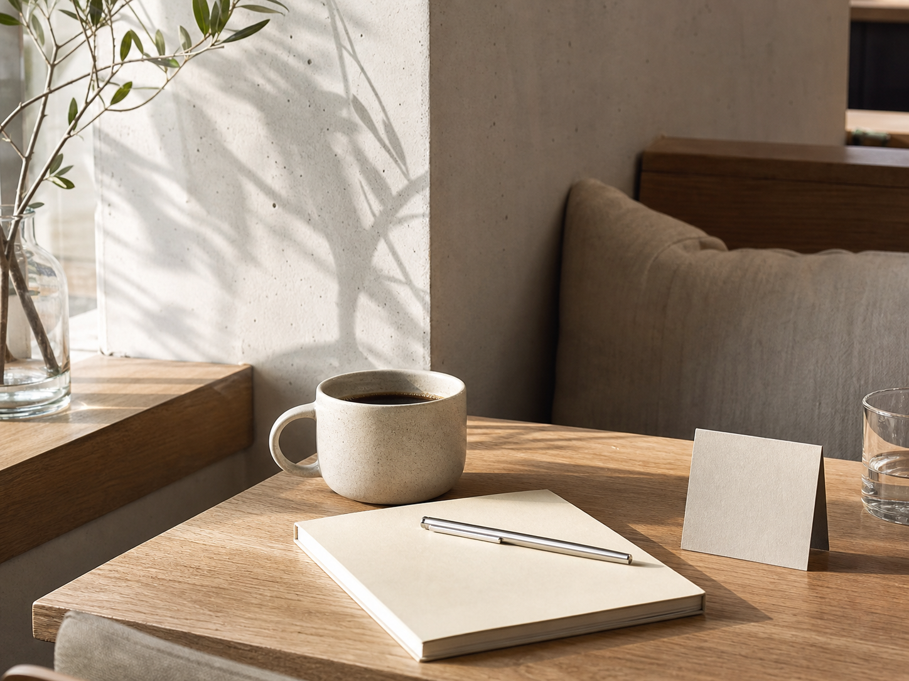

BRAND GUIDE · FAQ
도움이 필요하신가요?
모모커피를 이용하며 궁금했던 내용을 확인해보세요.
자주 묻는 질문
질문을 선택하면 답변이 펼쳐집니다.
01멤버십은 어떻게 가입하나요?＋
모모커피 회원가입 후 로그인하면 별도 신청 없이 멤버십이 자동으로 활성화됩니다. 마이페이지에서 현재 등급과 포인트, 스탬프를 확인할 수 있습니다.
02스탬프는 어떻게 적립되나요?＋
주문한 메뉴 개수와 관계없이 결제가 완료된 주문 1건당 모모 얼굴 스탬프 1개가 적립됩니다. 10개를 모으면 3,500원 할인 리워드가 자동 발급됩니다.
03쿠폰은 중복 사용할 수 있나요?＋
한 주문에는 쿠폰 1장만 사용할 수 있습니다. 다만 보유 포인트와 스탬프 리워드는 쿠폰 조건에 따라 함께 적용할 수 있습니다.
04모바일 주문이 가능한가요?＋
메뉴를 장바구니에 담은 뒤 쿠폰과 포인트를 선택하고 주문할 수 있습니다. 비회원도 장바구니는 이용할 수 있으며 회원 혜택은 로그인 후 적용됩니다.
05굿즈는 어디에서 구매할 수 있나요?＋
전국 모모커피 매장과 온라인 상품 메뉴에서 구매할 수 있습니다. 매장별 재고는 다를 수 있으니 방문 전 확인해주세요.